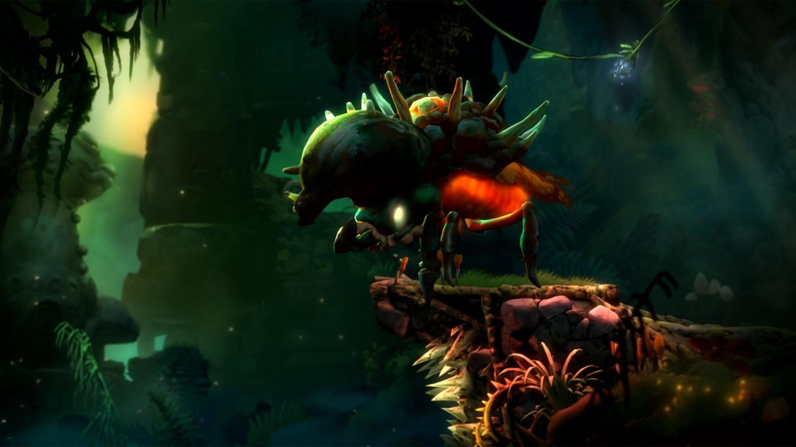
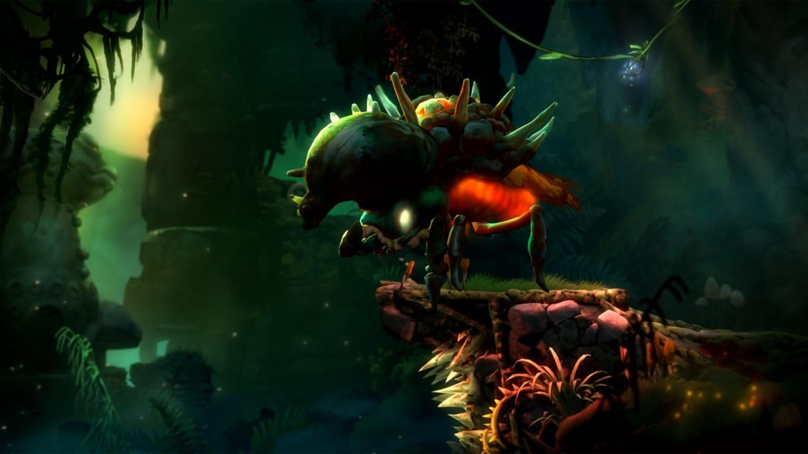

The little spirit Ori is no stranger to peril, but when a fateful flight puts the owlet Ku in harm’s way, it will take more than bravery to bring a family back together, heal the broken land of Niwen, and discover Ori’s true destiny.

The story begins where all stories should... at the beginning. The peace in the forest of Nibel, which at first glance seems to be kept well in the harmonious branches of the Spirit Tree, is suddenly shattered by a breathtaking roar of thunder. A storm breaks out, covering the sun and pummeling the forest with heavy rain and lightning. Another incredible flash zooms in on the trembling Spirit Tree, particularly highlighting one specific shining leaf. A powerful gust of wind tears the stem of the beautiful leaf, and in fluid, dazzling motions the currents quickly pull it away.


 

a boss is a significant computer-controlled enemy.[1] A fight with a boss character is commonly referred to as a boss battle or boss fight. Boss battles are generally seen at a climax of a particular section of the game, usually at the end of a level or stage, or guarding a specific objective; the boss enemy is generally far stronger than the opponents the player has faced up to that point and is usually faced solo.
Howl is the first boss in Ori and the Will of the Wisps and forms part of the tutorial section of the game. Here both combat and platforming skills will be put to the test. Howl can be spotted in the background as you approach the Spirit Gate after finishing the quest with Tokk. A little further on and Howl pounces through the screen, roaring.On the left or right side of the arena she fires a shotgun spread of corruption projectiles from her mouth.
Once you’ve worked your way through Mouldwood Depths, your reward is a fight against a massive spider, Mora. She’ll initially plunge you downwards, and you’ll fall into the arena properly. The handy-looking ledge here won’t be around for long, so don’t bother with it. You should notice that either side of the arena, the walls are bare, meaning they can be climbed. This will be especially useful for dodging and gaining height during the fight.
Shriek is large and very strong. She can fly and uses this to her advantage in chase sequences , she can attack you if you go under her with her 2 smaller claws , stomping with her bone spear limbs. She can send flames across the ground, fire out corruption projectiles. She also has a laser attack that goes from left or right side of the screen to the middle. Shriek uses her flying to destroy structures. Also to kill the spirit and the eviroment.
During your quest through Willow’s End, to open up access to the Spirit Willow, you will encounter the Willow Stone mini-boss. At this stage in the game, it shouldn’t pose too much of a threat to you, especially when you understand its attack patterns and how to combat them. You can only damage Willow Stone by striking its core, which is protected by two layers of rock for most of the fight.It will run and eat the spirit.
Kwolok corrupted by Stink Spirit. This is a fight in two stages, with no checkpoints. It requires a lot of patience, tests a few of your different skills and demands that you watch the enemy closely before planning your attacks. You’ll be fighting the first phase on dry land, and then the second from within the water, so be prepared. Also early on, Kwolok will smash the ground and create a pit of thorns in the middle of the floor.
The Horn Beetle will be very aggressive, almost relentlessly so, which can easily catch you off guard. The openings are there, but will likely be over too quickly to react the first time. The player, however, can use dash to their advantage. Hitting him from the front won’t do any damage. The final watch out is that either side of the arena is packed full of thorns which will damage constantly. With the aggressive movement of the Horn Beetle


Ori is a small white creature with a similar stance to a human or a bunny and has a cat-like tail and large black eyes with white pupils. They have two short horn-like tufts on top of their head, and underneath them there are larger ears, which droop when Ori is unhappy or weak. Ori's feet have small white hooves, as seen in their 3D model sheet.Their name is of Hebrew.
Kuro's Egg, also known as Ku, is the unborn child of Kuro, and her only remaining offspring.Kuro's Egg has the familiar appearance of a normal bird's egg, being ovular in shape but uncommonly huge in size. In fact, it is bigger than most of the characters in the game, save Kuro herself. The cream-colored shell of Kuro's Egg is speckled with dots.